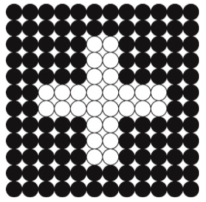
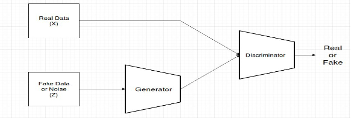
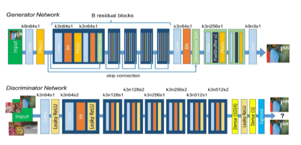
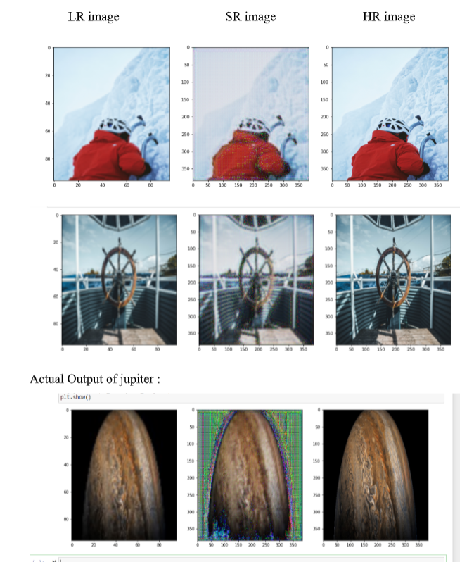

1 Introduction
Cosmic bodies Image Improvization using Super Resolution was my Final year Project.
This Deeplearning model can be used to improve resolution of far away celestial body images
that have been captured by Telescopes and have blurred low resolution image.
Super Resolution is the process of fusion for reconstructing a high resolution
image from several low resolution images. It extends classical single frame image
reconstruction/restoration methods by simultaneously using information from
multiple observed images to achieve resolutions higher than that of the original
data. These observations can be low resolution images captured simultaneously or
at different times by a single or multiple imaging devices. This methodology, also
known as multi frame super-resolution reconstruction, registers the observed
images to a common high resolution reference frame in order to formulate the
problem of fusion as one of constrained image reconstruction with missing data.
There are three major steps involved in Super resolution namely:
- LR image acquisition: Acquisition of a sequence of low resolution images
from the same scene with non-integer (in terms of inter-pixel distances)
geometric displacements between any two of the images.
- Image registration/motion compensation: Estimation of the sub-pixel
geometric transformation of each source image with respect to the reference
HR desirable grid.
- HR image reconstruction: Solution of the problem of reconstructing a high resolution image from the available data supplied by the source images.
The theoretical basis for super-resolution was laid by Papoulis , with the Generalised Sampling Theorem. It was shown that a continuous band-limited signal z(x) may be reconstructed from samples of convolutions of z(x) with different filters, assuming these filters satisfy certain conditions.
2 Low Resolution Image
To define in simple terms, image resolution is a measure of the detail that an image contains. In digital imaging, the resolution of an image commonly refers to the number of pixels present on a unit area of the screen. It is described and measured in PPI or pixels per inch, an indication of the number of pixels occupying per inch of the screen.Figure 1 
This figure is an extremely low-resolution image (12 × 12), enlarged to show the individual pixels. Also, to keep things simple, consider it to be a black-and-white image, so that we only need a single bit of information to determine a pixel's color. In this case, 0 will be a black pixel, 1 will be white. Thus, a numerical representation of this image would be as follows:
000000000000
000000000000
000001100000
000001100000
000001100000
001111111100
001111111100
000001100000
000001100000
000001100000
000000000000
000000000000
3 SRGAN
- Image Super Resolution:
4 Problem Statement:
To recover or restore high resolution image from low resolution image. There are
many forms of image enhancement which includes noise-reduction, up-scaling
image and color adjustments. This post will discuss enhancing low resolution
images by applying deep network with adversarial network (Generative Adversarial
Networks) to produce high resolutions images.
Our main target is to reconstruct super resolution image or high resolution image by
up-scaling low resolution image such that texture detail in the reconstructed SR
images is not lost.
5 What factors causes low resolution images?
Image quality can deeply affect the entire subjective appearance of a photo. Therefore, it is necessary to improve your picture quality for it to be impactful. There are various potential reasons which may cause low-resolution images. A few of them are listed below.
- Image Enlargement
- Unstable Camera Shots
- Blurry Images
- Poor Camera Settings
- File Damage
6 Why Deep Learning?
-
There are various ways of enhancing image quality. One of the most commonly
used technique is interpolation. This is easy to use but this leads to distorted image
or reduces the visual quality of image. Most common interpolation methods
produce blurry images, i.e. bi-cubic interpolation. More sophisticated methods
exploit internal similarities of a given image or, use data-sets of lowresolution
images and their highresolution counterparts to effectively learn a mapping between
them. Among ExampleBased SR algorithms, the SparseCodingBased method is one
of the most popular.
- SRCNN : SRCNN was the first deep learning method to outperform traditional
ones. It is a Convolutional Neural Network consisting of only 3 convolution
layers: patch extraction and representation, nonlinear mapping and
reconstruction.
- VDSR : Very Deep Super Resolution employs the similar structure as SRCNN, but goes deeper to achieve higher accuracy. Both SRCNN and VDSR apply bi- cubic up-sampling at the input stage and deal with the feature maps at the same scale as output.
Deep learning provides better solution to get optimized images. In recent years many methods have been proposed for Image Super Resolution. Here we will be discussing about SRGAN. Lets see other methods in deep learning:
7 About SRGAN-Super resolution Generative Adverserial Networks
GANs : GANs are class of AI algorithms used in Unsupervised Machine Learning. GANs are deep neural network architectures comprised of two networks (Generator and Discriminator) pitting one against the other (thus the “adversarial”). GANs is about creating, like drawing a portrait or composing a symphony. The main focus for GANs is to generate data from scratch.
To understand GANs, first we need to understand what a generative model is. In machine learning, the two main classes of models are generative and discriminative. A discriminative model is one that discriminates between two (or more) different classes of data — for example a convolutional neural network that is trained to output 1 given an image of a car and 0 otherwise. A generative model on the other hand doesn’t know anything about classes of data. Instead, its purpose is to generate new data which fits the distribution of the training data.
GANs consist of a Generator and Discriminator. Think it like a game where Generator tries to produce some data from probability distribution and Discriminator acts like a judge. Discriminator decides whether input is coming from true training data set of fake generated data. Generator tries to optimize data so that it can match true training data. Or we can say discriminator is guiding generator to produce realistic data. They just work like encoder and decoder.
Let make it easy by taking an example-Lets say we want to generate animated characters face. So we will provide training data which consists of images of anime character faces. And fake data consists of some random noise. Now Generator will try to produce image from noise which will be judged by discriminator. Both will keep training so that generator can generate images which can match true training data. One interesting thing is, images generated by generator will have features from original training data images but may or may not be the same. So like this we can generate some anime faces with heterogeneous mix of features from training data.
.
Figure 3 
.
Discriminator and Generator are both learning at the same time, and once Generator is trained it knows enough about the distribution of the training samples so that it can now generate new samples which share very similar properties. Idea Behind SRGAN : We have seen various ways for Single image super resolution. Those ways are fast and accurate as well. But still there is one problem which is not solved. That is, how can we recover finer texture details from low resolution image so that image is not distorted. Recent work has largely focused on minimizing the mean squared reconstruction error. The results have high peak signal-to-noise ratios(PSNR) means we have good image quality results, but they are often lacking high-frequency details and are perceptually unsatisfying as they are not able to match the fidelity expected in high resolution images. Previous ways try to see similarity in pixel space which led to perceptually unsatisfying results or they produce blurry images. So we need a stable model which can capture the perceptual differences between the model’s output and the ground truth image.To achieve this we will use Perceptual loss function which comprise of Content and Adversarial loss. Other then that SRGAN uses residual blocks for deep neural network.
Figure 4
.
8 Softwares Used
- Anaconda Navigator 2
- Python 3.7
- Jupyter Notebook
- Keras
- Tensorflow
9 Preparing the Dataset
Obtaining Dataset for training the proposed model was a pretty easy job since the images were randomly downloaded various random images from random portals. number of images in my dataset is 100 images which will be resized into two various resolutions namely high resolution 384x384 images and low resolution 92x92 images. And training is done on 300 epochs. The Proposed model is capable of improving resolution of any images since its trained using random images.10 Proposed System
The GAN that I used contains residual networks(ResNet) instead of deep convolution networks because training is made easier since residual networks used a type of connection called skip connections. People at Microsoft were able to come up with a type of neural network called residual network. Residual network or ResNet uses a type of connection called skip connection. Whenever a layer affects the performance of the architecture that particular lyer will be skipped but this does not affect the overall performance of the architecture but reduces resources and training time.11 Advantages:
- It is also used to overcome Vanishing/Exploding gradient found in CNN.
- It uses less resources
- It also takes less time to train without affecting Performance of the NN
Output
Figure 5.
Conclusion
We are able to obtain Super resolution images from trained generator and discriminator networks since we have used 100 images and trained using 300 iterations(epochs) we are able to obtain super resolution image that looks better than the low resolution image. Hence we can use this neural network model to obtain super resolution images of macroscopic applications like cosmic bodies for example sun, stars, galaxies etc.Code for this project can be found at my
Easy to understand PPT below
swipe right to turn page